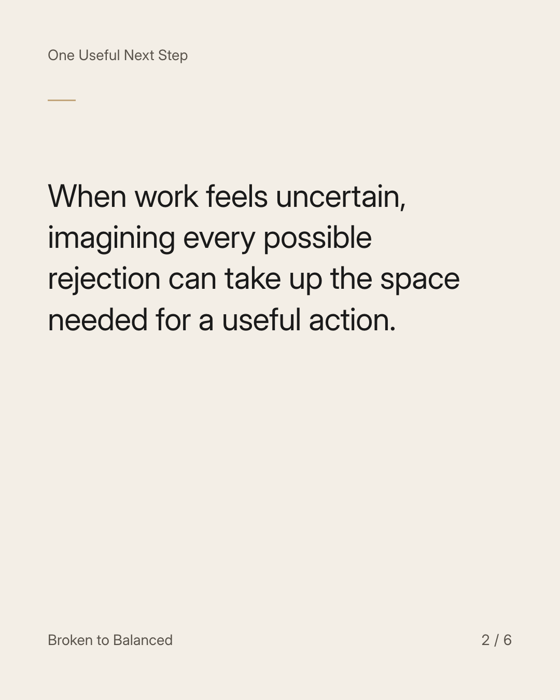
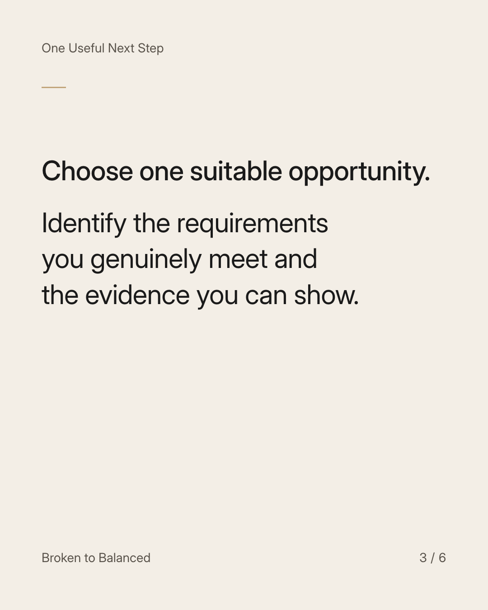
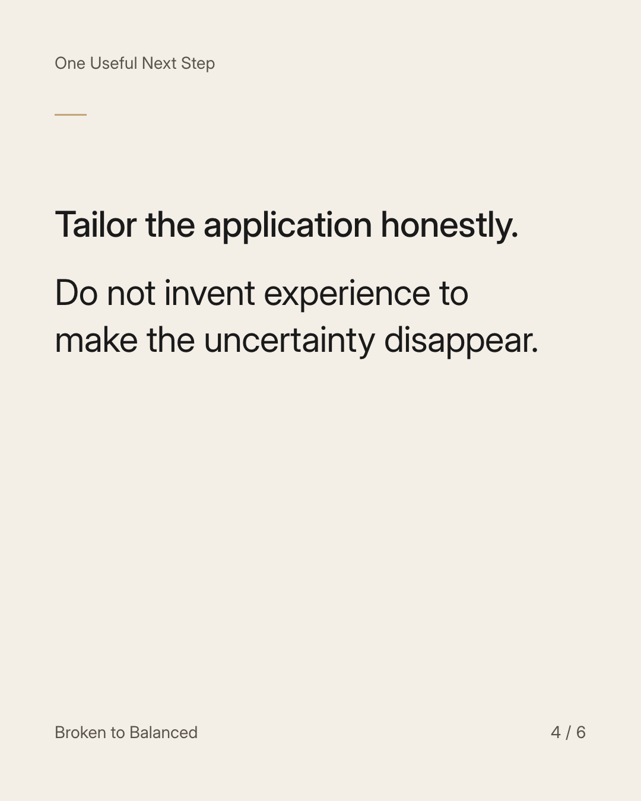
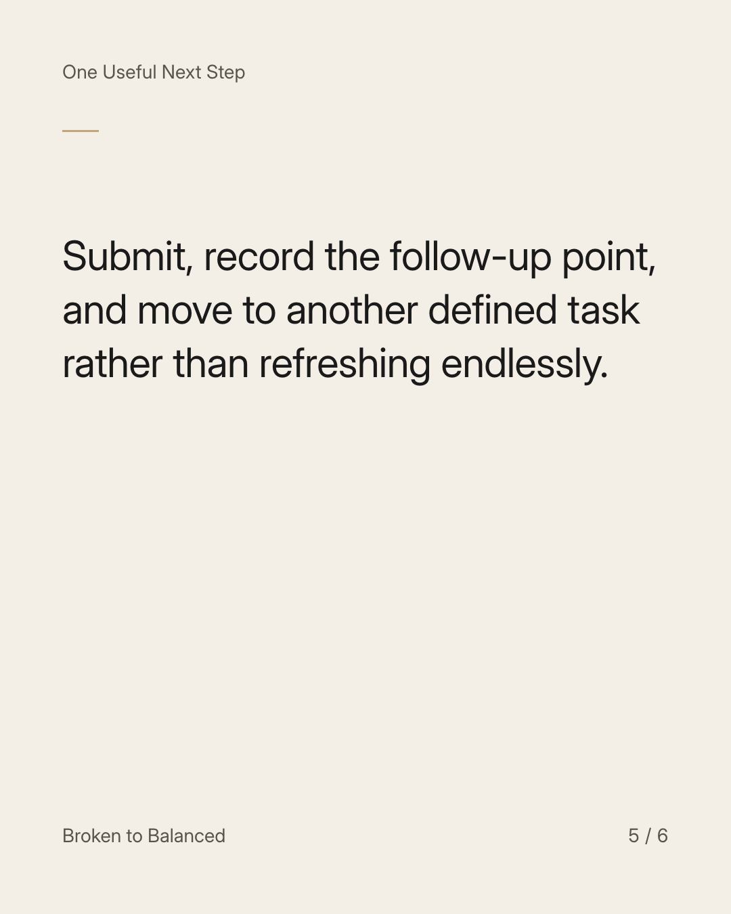
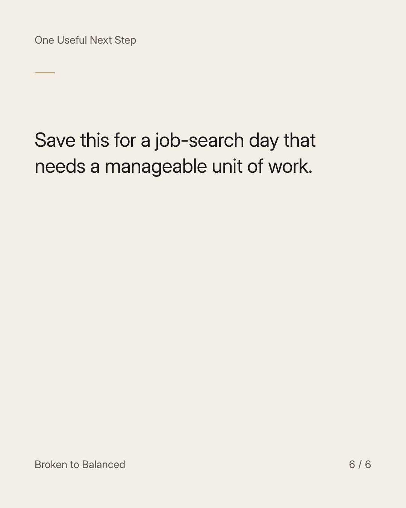

Exact text and accessibility text
Give the next application more attention than the next ten worries.
Slide 1 of 6. Give the next application more attention than the next ten worries.


Exact text and accessibility text
When work feels uncertain, imagining every possible rejection can take up the space needed for a useful action.
Slide 2 of 6. When work feels uncertain, imagining every possible rejection can take up the space needed for a useful action.


Exact text and accessibility text
Choose one suitable opportunity. Identify the requirements you genuinely meet and the evidence you can show.
Slide 3 of 6. Choose one suitable opportunity. Identify the requirements you genuinely meet and the evidence you can show.


Exact text and accessibility text
Tailor the application honestly. Do not invent experience to make the uncertainty disappear.
Slide 4 of 6. Tailor the application honestly. Do not invent experience to make the uncertainty disappear.


Exact text and accessibility text
Submit, record the follow-up point, and move to another defined task rather than refreshing endlessly.
Slide 5 of 6. Submit, record the follow-up point, and move to another defined task rather than refreshing endlessly.


Exact text and accessibility text
Save this for a job-search day that needs a manageable unit of work.
Slide 6 of 6. Save this for a job-search day that needs a manageable unit of work.
Exact caption
Plain-text fallback: select and copy the caption.